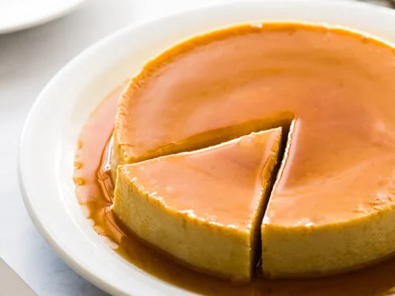

Spanish Flan

Description
Flan is a baked custard topped with caramel. Popular among Hispanics around the world, it is
a great dessert that is creamy and sweet.
Ingredients
- 1 Cup White Sugar
- 3 Eggs
- 14 oz of sweetened condensed milk
- 12 fl oz evaporated milk
- 1 Tbsp vanilla extract
Directions
- Preheat the oven to 350 Degrees F
- Melt sugar in a medium saucepan over medium-low heat until golden in color.
- Pour hot syrup into a 9-inch round glass baking dish, evenly coat bottom and sides
- Beat eggs in a large bowl. Add Condensed milk, evaporated milk, and vanilla; beat until smooth
- Pour mixture into baking dish. Cover with aluminum foil
- Bake in preheated oven for 1 hour
- flip onto a rimmed serving plate and Cut to serve